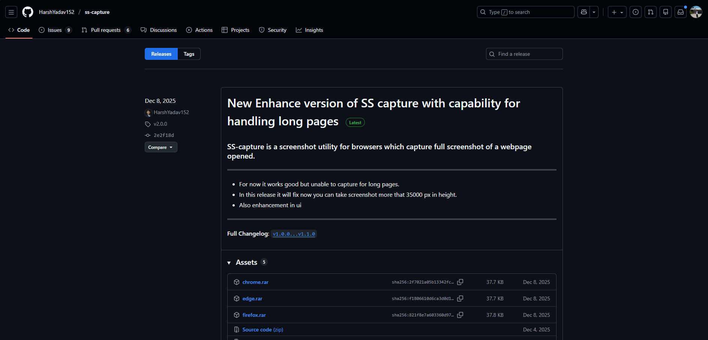
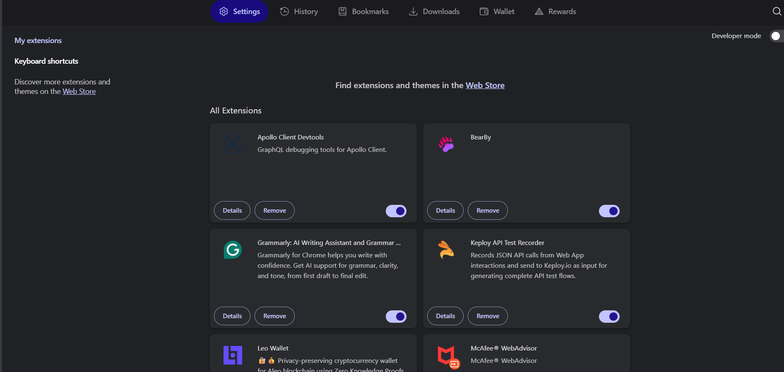
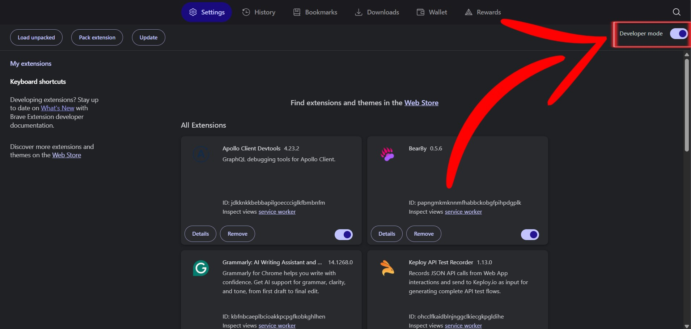
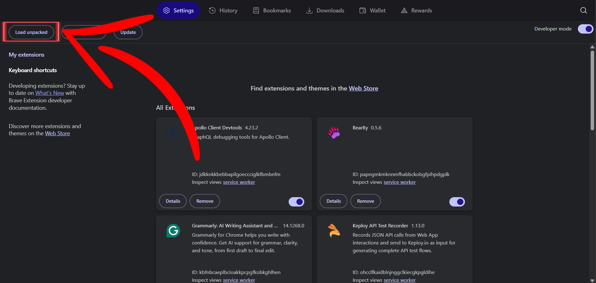
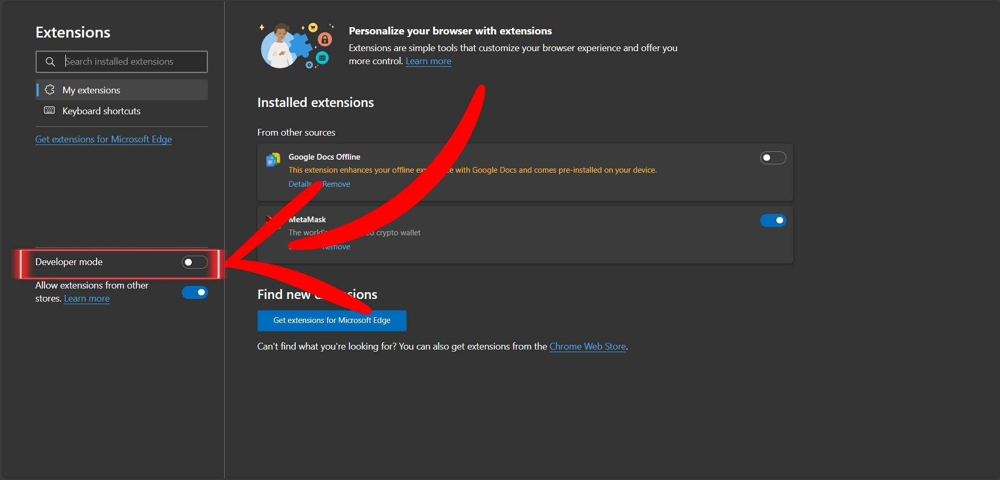
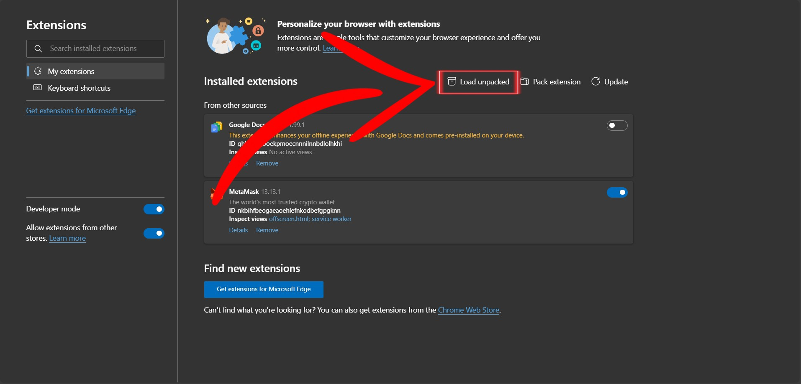
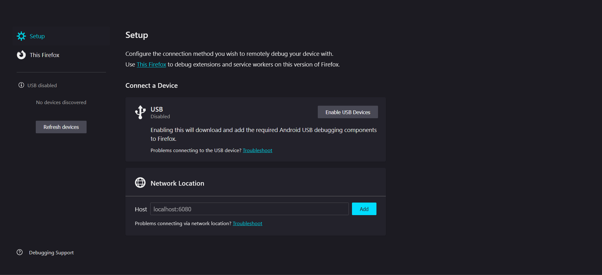

Installation Guide
This guide explains how to install the SS-Capture browser extension on Chrome, Microsoft Edge, and Firefox. The steps are written for beginners and follow the project README.
Install on Google Chrome
-
Download the latest release from the GitHub
Releases page.

-
Open Chrome and navigate to
chrome://extensions/ -
Enable Developer mode using the toggle in the top-right corner.
Developer mode allows loading unpacked extensions for development and testing.
 -
Click Load unpacked and select the
dist/chromefolder. -
The extension will appear in the extensions list and is ready to use.
[Screenshot: Extension Installed Successfully]Make sure you select the
dist/chromefolder, not the project root.
Official documentation: Chrome Extensions Getting Started
Install on Microsoft Edge
-
Download the latest release from the GitHub Releases page.
-
Open Microsoft Edge and navigate to
edge://extensions/
-
Enable Developer mode using the toggle in the left.

-
Click Load unpacked and select the
edge/folder. -
The extension will now be installed and ready to use.
[Screenshot: Extension Installed Successfully]
Official documentation: Edge Extensions Documentation
Install on Firefox
-
Download the latest release from the GitHub Releases page.
-
Extract the ZIP file to a known location.
[Screenshot: Extract ZIP File]
-
Open Firefox and navigate to
about:debugging - Click This Firefox.
-
Click Load Temporary Add-on and select
manifest.jsonfrom thedist/firefoxfolder.
-
The extension will remain active until Firefox is restarted.
[Screenshot: Firefox Extension Loaded]Firefox temporary add-ons are removed when the browser is closed.
Official documentation: Firefox WebExtensions Guide
Troubleshooting
- Ensure Developer mode is enabled before loading the extension.
-
Confirm that the correct folder was selected:
dist/chrome,dist/edge, ordist/firefox. - Firefox temporary add-ons are removed when the browser is restarted.
-
Internal browser pages such as
chrome://andedge://cannot be captured due to browser security restrictions.